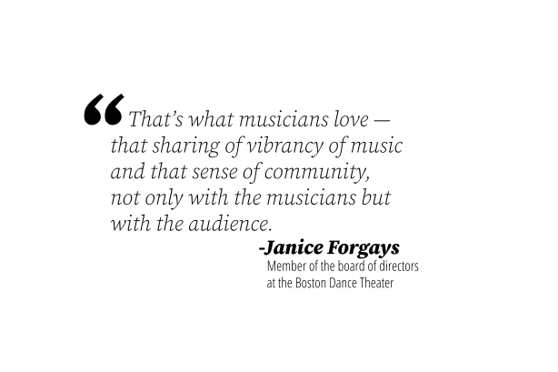

Two years after the COVID-19 pandemic first damaged the arts industry in Massachusetts, arts organizations in Boston have revived with funds from the mayor’s office — $3.4 million, to be exact.
In February, Mayor Michelle Wu and the Mayor’s Office of Arts and Culture announced that they had awarded grants to 192 organizations for general operating support and COVID-19 relief.
In collaboration with the Boston Cultural Council, the Mayor’s Office of Arts and Culture annually distributes funds to support the arts. This year, they combined two grants into one — Boston Cultural Council/Reopen Creative Boston funding — and aimed to give the highest grants to organizations with the lowest budgets. Each organization received between $2,000 and $63,500.
“We really see arts as being essential to the overall health of the city of Boston because they touch so many industries and have a whole range of impacts,” Kristina McGeehan, the communications director at the Mayor’s Office of Arts and Culture, said. “They not only help us with our economy and the city’s overall financial health but they also help us [with our] individual well-being and our physical health.”
Grants were awarded from Recover Creative Boston fund — which draws money from the American Rescue Plan, a federal COVID-19 relief package passed in 2021 — and funds from the Boston Cultural Council. Recipient organizations were grouped in 12 categories by the work they do. Use this graphic to explore the average amount of funding organizations in each category recieved from the different grant sources.
Grants were awarded from Recover Creative Boston fund — which draws money from the American Rescue Plan, a federal COVID-19 relief package passed in 2021 — and funds from the Boston Cultural Council. Recipient organizations were grouped in 12 categories by the work they do. Use this graphic to explore the average amount of funding organizations in each category recieved from the different grant sources.
Janice Forgays, a board member of the Boston Philharmonic Orchestra, saw the grants as a necessity. Since the company does not have full-time musicians, the funds helped the Boston Philharmonic Orchestra employees survive the pandemic.
“It was a dark time,” Forgays said. “[The grant money] helped to keep things moving and helped to keep our musicians eating.”
Ellice Patterson, the executive director of Abilities Dance Boston, also expressed gratitude for the funds. However, Patterson said she questioned whether this was enough.
“I think that there can always be more funding with art,” Patterson said. “But I [also] think that we can be grateful for the increases [in funding] that we've seen during this time, as well as continue to advocate more so that we can more equitably sustain our industry.”
No matter how much money organizations get from public funding, the implementation of public funds in general represents something more than money, said Adam Mazo, director of the Upstander Project.
“When public dollars go into the arts and culture area, it’s also a signal of what’s important to us as citizens in our community,” Mazo said.
Ilisa Hurowitz, a member of the board of directors at the Boston Dance Theater, believes that funding for the arts is essential, but it can not be compared to other needs. Instead, Hurowitz views the needs for public funding of different issues in separate categories: urgent and long-term needs.
“There are so many needs and so much competition, so I think it’s hard to put arts next to [something like] food pantries and housing. It’s such a different kind of investment,” Hurowitz said. “I wouldn’t say one is better than the other qualitatively. They’re [all] really important.”
When the country went into lockdown two years ago, arts companies had to push past the obstacles and get creative to keep the arts alive. Some companies had to adapt to the virtual world and learn new technical skills, while others chose a different route and decided to move their work outdoors.
Forgays recalled the conductor of the Boston Philharmonic Orchestra holding several concerts in his driveway in Cambridge during the pandemic. Attendance was free of charge, and enough people came for the driveway concerts to cause traffic jams.
“There’s an energy. There’s a joy [and] uplifting effect of the Philharmonic concerts. It’s very personal and very emotional,” Forgays said. “It’s impossible to walk out without your spirits lifted and your optimism having come up quite a bit.”


For others like Alison Yueming Qu, the executive producer of CHUANG Stage, putting on performances was not at the top of the priority list. During a time of increased hate crimes, especially those targeted against Asian Americans and Pacific Islanders, or AAPIs, Qu recognized the importance of communicating with their Mandarin-English theater group about their needs. After listening to the company, Qu decided to postpone in-person rehearsals and performances for two years — CHUANG Stage’s first in-person rehearsal was in March of this year.
“There’s the conversation of, ‘What work is the most urgent?’ Is it most urgent to put on a production? Or is it most urgent during a time of a lot of anti-Asian hate to host a space for the community, to have a community conversation [and] to let folks rest?” Qu said.
Reflecting on the past few years in the pandemic, Qu said that they are connected to art on a more personal level. As an Asian artist, Qu recognizes art as something that can unite people and collectively process trauma like nothing else can.
“Art is my activism,” Qu said. “I do art not because I want to be an artist, but because art is my tool and my weapon to call upon awareness on a lot of the ongoing issues in our community, to revive the neighborhoods, to activate the space, to fight against gentrification.”
Mazo, who runs a film and video company aimed to raise awareness of social injustice, views art in the same way. Growing up in a Jewish family, he said he aligns his morals and priorities with a Hebrew phrase: “tikkun olam.”
“It’s the idea that even though we may not see the results of our labors, [it] does not mean that we should not try to make the world a better place while we’re here,” Mazo said. “It’s about working to do everything we can to make the art community a better place.”
As one of the 192 recipients of the Boston Cultural Council/Reopen Creative Boston funds this year, Mazo expressed the necessity for the local government to publicly fund two things that keep Boston vibrant: art and culture.
“When you think about all the different things that we do and invest our time in, so much of it is connected back to art — going to a movie, going to a show, listening to music, enjoying a mural as you ride on the T,” Mazo said. “That’s art.”